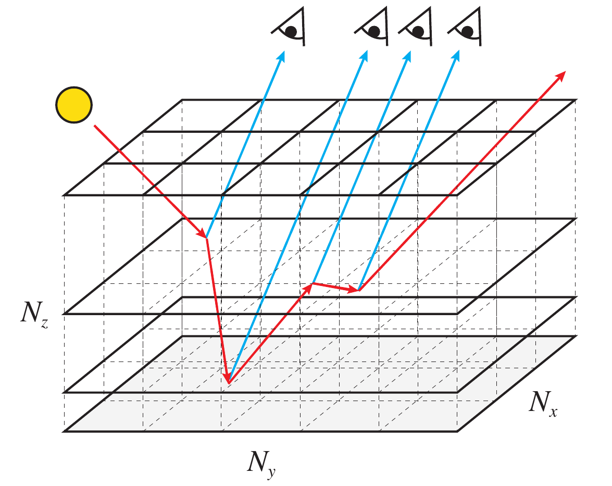
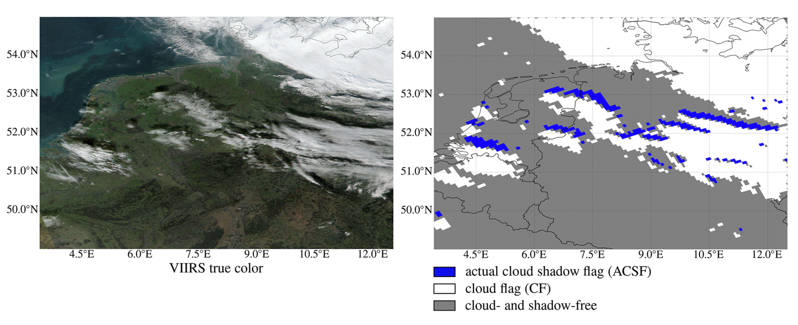
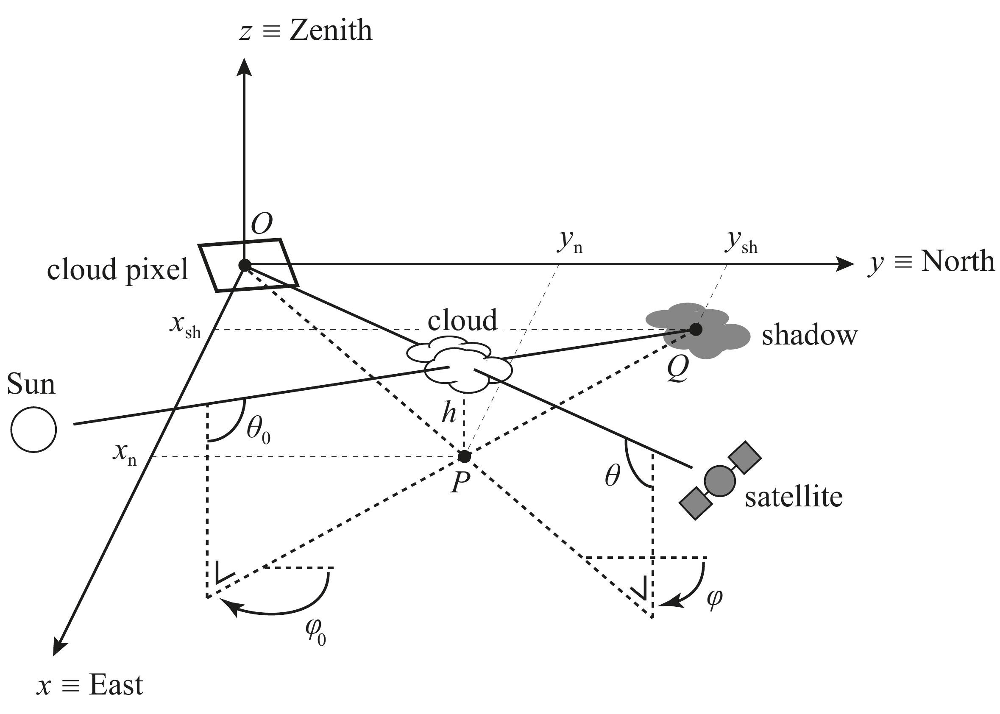
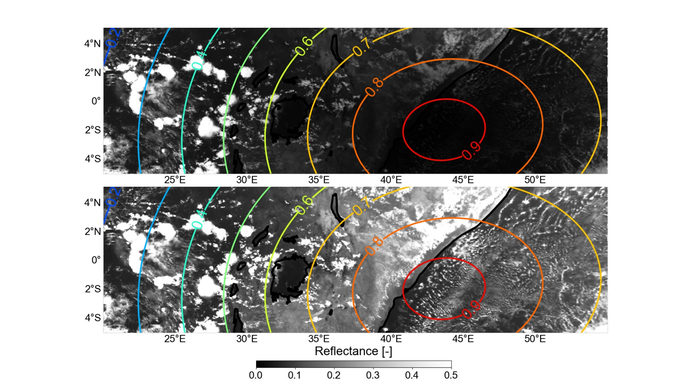
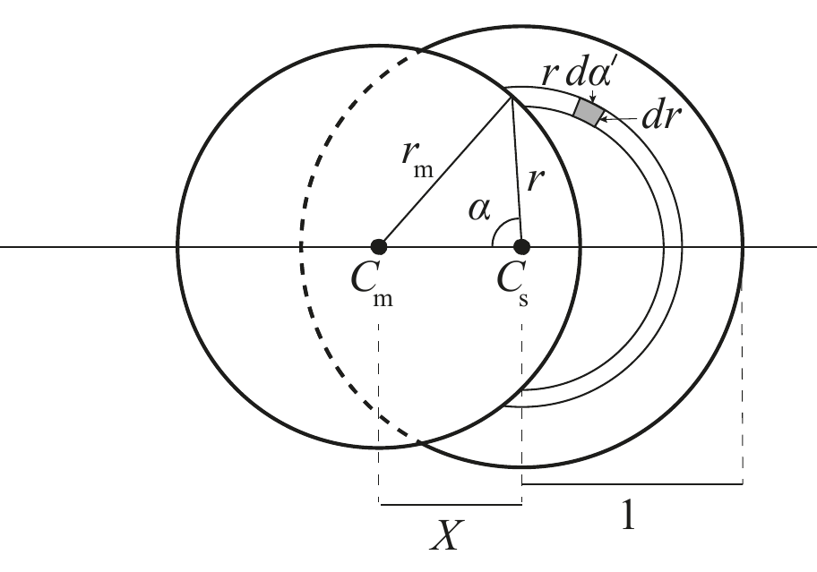

Afleiding vanuit de basisfysica
De werkvergelijkingen voor gepolariseerd stralingstransport afleiden vanuit de onderliggende natuurkunde, in plaats van het model als een black box te behandelen.
Ik ontwikkel numerieke methoden die de fysica van gepolariseerd licht vertalen naar simulaties van waarnemingen van planeetatmosferen. De centrale code is MONKI: een driedimensionale Monte Carlo-stralingstransportcode geschreven in Fortran.
De werkvergelijkingen voor gepolariseerd stralingstransport afleiden vanuit de onderliggende natuurkunde, in plaats van het model als een black box te behandelen.
De fysica vertalen naar robuuste Fortran-code, inclusief fotonpaden, verstrooiingsgebeurtenissen, Stokes-vectorboekhouding, absorptie en statistische convergentie.
Modeluitvoer vergelijken met gevestigde stralingstransportbenchmarks en afwijkingen gebruiken om de methode en implementatie te verbeteren.
Simulaties gebruiken om te verklaren waarom specifieke radiantie- en polarisatiesignalen ontstaan in aardobservatie, Venus- en exoplaneetwaarnemingen.
MONKI · 3D Monte Carlo-stralingstransport
MONKI is de belangrijkste codeontwikkeling in mijn werk: een driedimensionaal Monte Carlo-stralingstransportmodel voor totale en gepolariseerde straling die door planeetatmosferen wordt gereflecteerd en doorgelaten. Ik heb de Fortran-code vanaf nul geschreven, inclusief fotonsampling, de lokale-schattingsmethode, polarisatieboekhouding, absorptiebehandeling en parallelle uitvoering voor grote atmosfeersimulaties.
De code kan worden gebruikt voor horizontaal homogene atmosferen en voor volledig driedimensionale scènes, zoals wolkenvelden uit atmosfeermodellen. Daarmee vormt MONKI een brug tussen fundamentele verstrooiingsfysica en gesimuleerde waarnemingen van de Aarde, Venus en aardachtige exoplaneten.


DARCLOS · TROPOMI-wolkenschaduwdetectie
DARCLOS is een methode om wolkenschaduwen in TROPOMI-data op te sporen. De methode gebruikt de geometrie van de zon, wolkhoogte, locatie op het oppervlak en satellietkijkrichting om te bepalen waar een wolkenschaduw op het aardoppervlak hoort te liggen, ook al wordt de wolk zelf door de satelliet op een andere schijnbare locatie gezien.
De resulterende wolkenschaduwvlag helpt scènes te identificeren waarin driedimensionale wolkeneffecten gemeten reflectanties en afgeleide atmosfeerproducten beïnvloeden. Dit sluit direct aan op mijn aardobservatiewerk aan aerosolen, oppervlaktereflectie en de fysische interpretatie van satellietmetingen.


Zonsverduisteringscorrectie · reflectantieherstel
De zonsverduisteringscorrectie berekent voor elke satellietpixel welk deel van de zonneschijf door de maan wordt geblokkeerd en gebruikt die geometrie om satellietmetingen te herstellen. Daarmee veranderen eclipsscènes van problematische waarnemingen in bruikbare metingen van de atmosfeer binnen de gedeeltelijke maanschaduw.
Ik ontwikkelde deze correctie om te onderzoeken hoe verminderd zonlicht gemeten stralingsvelden beïnvloedt. Later maakte de methode het mogelijk om de snelle reactie van ondiepe cumuluswolken op zonsverduisteringen te bestuderen, en zo stralingstransport, satellietwaarnemingen en wolkenfysica met elkaar te verbinden.

